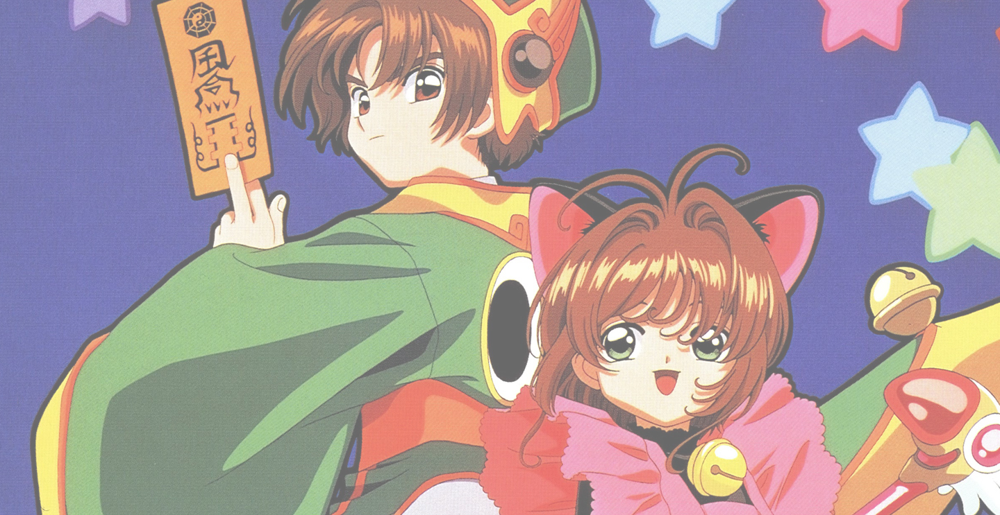

"You must have faith. She is stronger than she seems."

This is a shoujo-style magical girl adventure and romance story of a 10-year-old girl named Sakura Kinomoto, who accidentally discovered a mysterious book, the Clow Book, at her father’s basement and accidentally opening it with unknown magic, releasing all of the mysterious Clow Cards and awakening its guardian, Cerberus (or Keroberos). With the help of Cerberus, Sakura must use her newly-found powers to retrieve all the Clow Cards and return them to the Clow Book. In addition to that, Sakura must also prove that she is capable of becoming the Clow Cards’ new master after the death of its creator and original master, Clow Reed. On the way, she faces different challenges, from dealing with the entities of the cards themselves, a rival who may be the true heir to the Clow (Syaoran Li), and other types of situations that both deal with her mission and her everyday life.
More in-depth information is available here on Wikipedia and various Wiki sites of the series.
Card Captor Sakura (can also be spelled Cardcaptor Sakura) was first introduced to U.S., Canada, and some western TV audience under the slightly edited title Cardcaptors back in 2000 as the second anime series to be added in the old Kids WB children’s programming block after the success of the first season of Pokemon. There were a lot of changes in Cardcaptors to make it more of an adventure/mystery series aimed at children, removing a lot of some “mature” implications and themes to cater more to the younger western audience. Some of the character names were changed, or slightly changed anyway, but regardless, it was a good introduction of the series to the fans outside Japan. Around the same year, the English translation of the Card Captor Sakura manga was released by a now-defunct manga distributor company, Tokyopop. I went by CLAMP’s manga story when I first built the CBLW fanfiction directory/shrine and then both the manga story and the anime story when I began writing fanfics of my own.
You won’t be seeing the sweet development of the relationship between Sakura and Syaoran on Cardcaptors, so it is highly recommended you read the manga or watch the original unedited Japanese version. If you prefer watching it dubbed, find the NIS America re-release of the DVDs (available on Amazon), in which they have a different English dubbing cast, going with the original storyline as it was intended. This also includes the two movies (although you can actually watch the movies dubbed in English on the older DVD releases), in which the second movie officially concludes the anime series story. From there, I let you be the judge.
Sakura and Syaoran became one of the most beloved, memorable pairing (if not the most memorable) in the manga/anime industry, so much that CLAMP even went further out of their CCS shell to make their fans happy and excited. I was excited at first, but then, well, I have a different opinion on each. Please read about them below.
The latter series, also created by CLAMP, features a much older Sakura and Syaoran, in a whole different world from CCS, a whole different storyline, and of course, very different characters from their CCS younger counterparts. But that’s just it for me.
In Tsubasa Reservoir Chronicle (TRC), Sakura and Syaoran are just Sakura and Syaoran, not Sakura Kinomoto and Syaoran Li, and because of this, even though the names and physical appearances are similar, they are four different characters to me. The other characters from CCS who also had cameos on TRC are also different characters as well. I have read a few chapters and seen a few episodes of TRC myself, but somehow, I am still stuck with my love for CCS that I couldn’t even get a grasp of the storyline. In addition to that, TRC features Syaoran as the main character, and is a lot more shounen style than CCS’ original shoujo style, even though the relationships between the two characters are as eminent as that of CCS. Also, Sakura in TRC has become your damsel in distress, compared to Sakura Kinomoto the all-powerful Master of the Clow card captor as equal as that of Syaoran Li as a rightful candidate to the Clow. I’m not saying that I don’t like TRC, but TRC is a whole different story (and a whole lot more complex!) with whole different characters unfamiliar of their original CCS counterparts.
(Also, a bit of a note. Sakura's hair in TRC is a little different from Sakura's hair in CCS. It's a very minor detail, but I can conclude that they are two different characters.)
To make it short, CCS is when Sakura and Syaoran have their relationship developed into something a lot more special. TRC goes the other way around of that.
TRC also has a sequel currently being released called Tsubasa World Chronicle. If TRC gets to have a sequel, why not CCS? Well, keep reading this section until you get to it. You can learn more about TRC in this Wikipedia article.
With the success of TRC, CLAMP created another spinoff from TRC called Shiritsu Horitsuba Gakuen (Horitsuba Private Academy). Rather starting off as a manga series (I’m not even sure if there really is a manga series), this new spinoff is a crossover of TRC and another CLAMP spinoff series, xXxHolic, but was created first in a form of four drama CDs and omake mangas instead of the usual manga series unlike the previous two. Like TRC and xXxHolic, SHG takes place in another world, and the lead characters from the two series are portrayed as high school students living your typical high school life.
From what I gathered, there are a few differences here. For instance, Syaoran has an older twin, Syaoron, who is a lot more mature and laid back than that of the younger twin. And finally, Sakura (TRC) has a younger cousin, Sakura Kinomoto (CCS). So, just like with TRC, the Sakura and Syaoran of SHG are different than our Sakura and Syaoran of CCS.
Regardless of the differences, one important thing has not changed: Sakura and Syaoran are still portrayed as (would-be) lovers, like in CCS (near the end) and TRC (in the beginning). (Hanyaaaan~)
I don’t know much about this series, but hopefully I would write more about it when I get my hands on a (scanlation?) English translation of the omake manga.
As of this writing (June 2016), shoujo manga magazine Nakayoshi debuted the first chapter of the highly-anticipated CCS sequel manga. The title is called Cardcaptor Sakura: The Clear Card Arc.
Because the series is just fresh and brand-new, don't expect a licensed English language version (or whatever language version you prefer reading) out soon yet. I finally was able to read an early English scanlation (needs some work in my opinion because I can see some mistranslations there. Long story.) on Mangakoi.
We don't have much core plot just yet, however, the new sequel opens right at the ending of the original CCS manga, where Sakura reunites with Syaoran as middle school students two years after Syaoran went back home from Hong Kong. Although we remember that very sweet ending of the two heroes reuniting each other with smiles on their faces (and teddy bears on their arms), they weren't exactly alone. Tomoyo had been hiding in the bushes with her handy camcorder to capture more Sakura moments as usual. The only difference now is that Tomoyo is also targeting Syaoran in her videos at the same time. But on the other hand, we would be looking more forward to the sweet and squee moments of our card capturing heroes, with a brand-new mystery that is about to come for them.
We also learn a few of the following:
The only little clue that we have in this first teaser chapter is that Sakura began having another dream in her sleep, in which her Sakura Cards, whom she hasn't touched or summoned for the last two years, suddenly faded, leaving only with blank white cards. This is where the title The Clear Cards Arc come into play. Sadly, that's all we've got for the first chapter.
And, because this is being serialied in a monthly shoujo manga magazine in Japan, that only means one thing. We will have to wait every month for the next chapter of the story to arrive. I know it sounds frustration because all new manga being released in Japan are always serialized in monthly manga magazines before they become condensed in tankoubon (volume-based books that we're used to seeing in bookstores) format. The story will take us with a lot of waiting, but the waiting should be worth it.
Source: Rocket News, Anime News Network